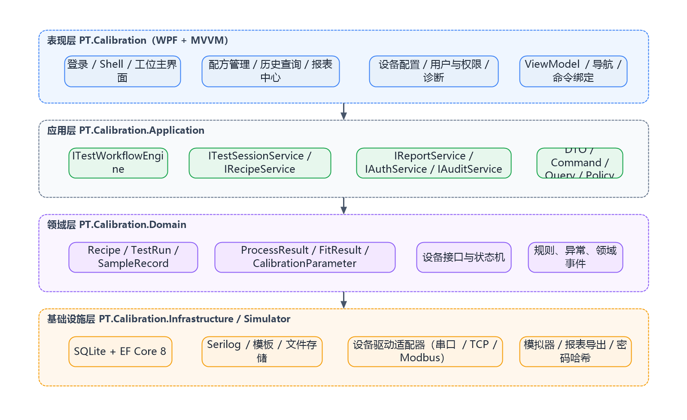
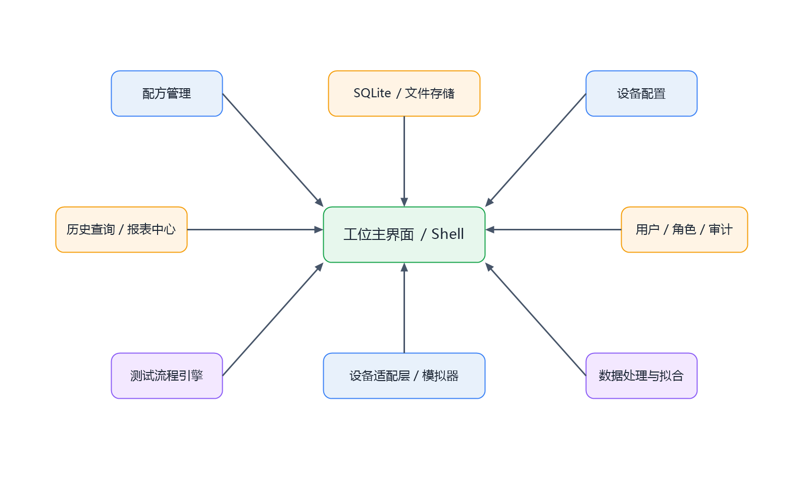
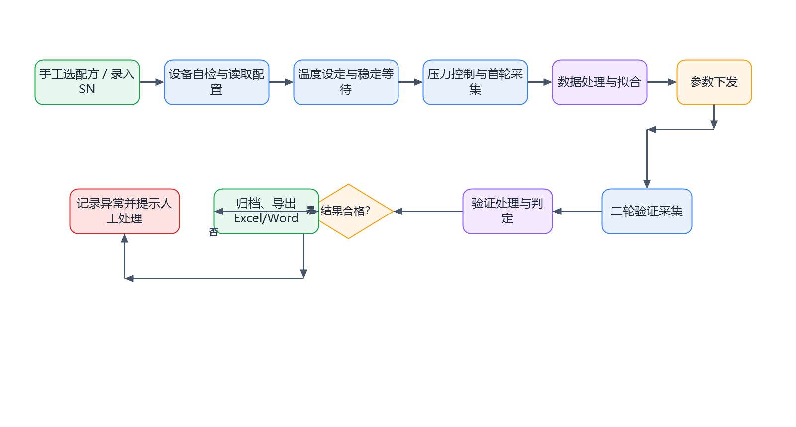
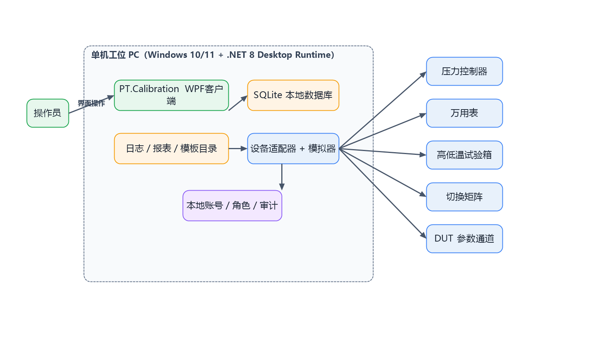
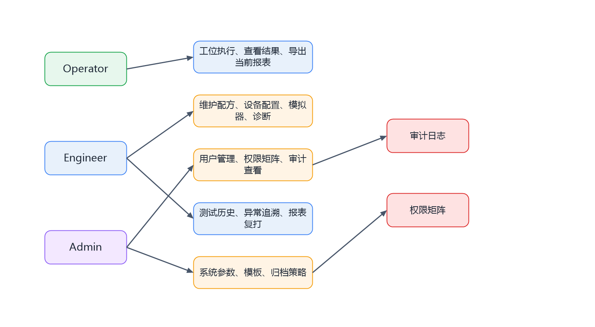

1 引言
2 系统概述
3 总体架构设计
4 功能模块设计
5 数据与报表总体设计
6 部署与运行环境设计
7 安全、权限与审计设计
8 非功能设计
9 风险与分阶段实施建议
本文档用于说明 PT.Calibration 软件的总体设计方案，统一产品边界、系统分层、主要功能模块、数据存储方式以及部署与安全策略，为后续详细设计、开发实施和评审验收提供基线。
本说明书适用于基于压力控制器、万用表、高低温试验箱、电气切换矩阵和 DUT 参数下发通道组成的自动化标定系统。首版定位为单机工位、一次服务 1 个 DUT 的量产工位型客户端。
| 术语 | 说明 |
|---|---|
| DUT | 待测压力开关 Device Under Test。 |
| Recipe | 按料号管理的测试配方，承载压力、采样、温度、容差和通道映射配置。 |
| TestRun | 一次完整标定与验证任务，关联 SN、配方、结果和报表。 |
| FS | Full Scale，满量程。 |
| R² | 拟合优度，用于判定最小二乘拟合是否合格。 |
| 编号 | 资料名称 | 用途 |
|---|---|---|
| R1 | 《压力开关产品自动化标定与测试方案》 | 业务流程、设备组成、参数与异常处理依据。 |
| R2 | 《最小二乘法计算方案及系数说明》 | 拟合算法、系数意义和 R² 判定依据。 |
| R3 | .NET 8 / WPF / SQLite 资料 | 技术路线依据。 |
软件目标是替代人工完成压力设定、温箱控制、实时采样、数据处理、拟合、参数下发和二次验证，形成完整“标定-验证”闭环，并保留全过程可追溯记录。
| 维度 | 定位 |
|---|---|
| 部署形态 | 单机工位版，本地保存数据，后续预留联网扩展点。 |
| 运行对象 | 一次运行 1 个 DUT，围绕当前 SN 展开流程。 |
| 界面形态 | 量产工位型，突出“选配方、录 SN、启动测试、看结果”。 |
| 数据策略 | SQLite 本地库存储结构化数据，文件系统保存日志、模板和报表。 |
| 联调策略 | 首版内置模拟器，真实设备通过抽象适配层逐步接入。 |
| 账号策略 | 本地完整账号体系，至少包含 Operator、Engineer、Admin。 |
系统按“表现层、应用层、领域层、基础设施层”进行分层。WPF 负责界面与交互；应用层负责流程编排；领域层负责核心实体、状态和规则；基础设施层负责数据库、报表、日志和设备适配。

| 层次 | 职责 | 不负责内容 |
|---|---|---|
| 表现层 | 页面呈现、导航、输入校验、命令绑定、实时展示。 | 不直接访问数据库、不直接拼接设备协议。 |
| 应用层 | 编排测试流程、协调设备与算法、执行业务权限。 | 不实现硬件驱动细节。 |
| 领域层 | 定义实体、状态机、接口契约、业务规则、异常。 | 不依赖 UI 框架和数据库实现。 |
| 基础设施层 | 落实 SQLite、日志、报表导出、设备驱动、密码哈希、模拟器。 | 不决定业务判定规则和页面布局。 |
工位主界面是操作入口，测试流程由流程引擎驱动。配方服务、设备配置、数据处理、报表中心、权限审计和历史查询通过统一服务接口协同。

| 技术项 | 选型 | 理由 |
|---|---|---|
| 桌面框架 | WPF + MVVM | 适合设备工位场景，数据绑定成熟，界面状态表达清晰。 |
| 运行平台 | .NET 8 | 长期支持版本，Windows Desktop Runtime 完整。 |
| 存储 | SQLite + EF Core 8 | 单机部署轻量，迁移成本低，适合本地工位长期运行。 |
| 日志 | Serilog | 便于分流应用、设备、告警和审计日志。 |
| 报表 | ClosedXML + Open XML SDK | 可脱离 Office 生成 Excel 和 Word。 |
业务主流程严格遵循“配方选择 → 设备自检 → 首轮采集 → 数据处理与拟合 → 参数下发 → 二轮验证 → 判定归档”的闭环路径。参数下发后的第二轮验证不可省略。

| 模块 | 主要职责 | 关键输出 |
|---|---|---|
| 工位执行模块 | 承接操作员启动动作，显示测试进度、实时数据和最终判定。 | 当前任务状态、实时采样画面、Pass/Fail。 |
| 配方管理模块 | 维护料号与测试配方，配置压力、温度、采样、容差和通道映射。 | Recipe 主数据及版本记录。 |
| 设备配置模块 | 维护设备型号、连接方式、协议类型和工位通道映射。 | 设备连接档案、驱动参数。 |
| 流程与算法模块 | 执行状态机、采样、处理、拟合与 NG 判定。 | ProcessResult、FitResult、CalibrationParameter。 |
| 历史查询与报表模块 | 按 SN、料号、日期、结果查询历史任务并导出报表。 | 测试履历、报表文件索引。 |
| 用户权限与审计模块 | 管理本地账号、角色、密码策略和审计日志。 | 用户档案、权限矩阵、AuditLog。 |
| 数据类别 | 示例 | 存储方式 |
|---|---|---|
| 主数据 | 料号、配方、设备配置、角色权限 | SQLite 结构化表 |
| 过程数据 | 原始采样点、阶段状态、异常事件 | SQLite 结构化表，必要时附带 CSV 缓存 |
| 结果数据 | 处理结果、拟合结果、标定参数、最终结论 | SQLite 结构化表 |
| 文档数据 | Excel、Word、模板文件 | 本地文件系统 + 数据库索引 |
| 报表类型 | 内容重点 | 生成时机 |
|---|---|---|
| Excel 测试记录 | 原始采样、处理结果、拟合结果、异常明细、标定前后对比。 | 任务完成后自动生成，可手工复打。 |
| Word 测试报告 | 产品信息、关键指标、结论、追溯信息和签核区域。 | 任务判定完成后自动生成，可按模板升级。 |
首版软件部署在单台 Windows 工位 PC 上，通过串口、TCP 或 Modbus 等协议与现场设备通信。本机同时承担界面展示、流程执行、数据库存储和报表导出职责。

| 项目 | 要求 |
|---|---|
| 操作系统 | Windows 10/11 64 位。 |
| 运行时 | .NET 8 Windows Desktop Runtime。 |
| 数据库 | SQLite 文件，支持本地备份与恢复。 |
| 目录结构 | 建议包含 Config、Data、Logs、Reports、Templates、Archive 等目录。 |
| 外设接口 | 支持串口、以太网、USB 转串口等工业连接形态。 |
系统采用本地完整账号体系，权限不依赖操作系统账户。角色矩阵用于控制测试执行、配方维护、设备配置、审计查看和系统设置等功能入口。

| 指标类别 | 设计要求 |
|---|---|
| 易用性 | 主界面在单屏完成主要操作，状态、告警、进度和结果清晰可见。 |
| 可靠性 | 通信失败、采样异常、拟合失败具备重试和可追溯日志。 |
| 性能 | 500ms 默认采样频率下，界面更新和数据落库不阻塞流程执行。 |
| 可维护性 | 分层明确，设备驱动与业务流程解耦，便于分模块并行开发。 |
| 可扩展性 | 保留多工位、中心数据库、企业认证和非线性算法扩展点。 |
| 阶段 | 重点工作 | 交付物 |
|---|---|---|
| 阶段 1 | 搭建解决方案、分层骨架、账号权限、SQLite 与日志。 | 可启动的 WPF 壳、基础数据层和权限骨架。 |
| 阶段 2 | 完成配方管理、测试状态机、模拟器与主界面。 | 模拟闭环可跑通的工位版本。 |
| 阶段 3 | 接入数据处理、拟合、报表、历史查询、异常追溯。 | 可评审的业务完整版本。 |
| 阶段 4 | 逐类接入真实设备驱动并完善联调。 | 面向现场试运行的实机版。 |
本概要设计侧重说明“软件整体怎么设计、由哪些部分组成以及为什么这样设计”。类级实现细节、数据库字段和接口方法在《软件详细设计说明》中进一步展开。